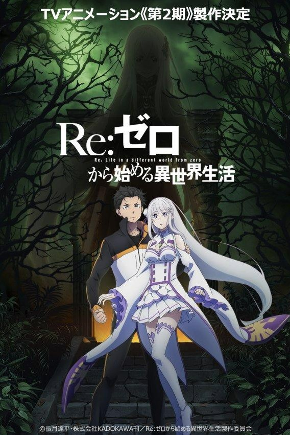
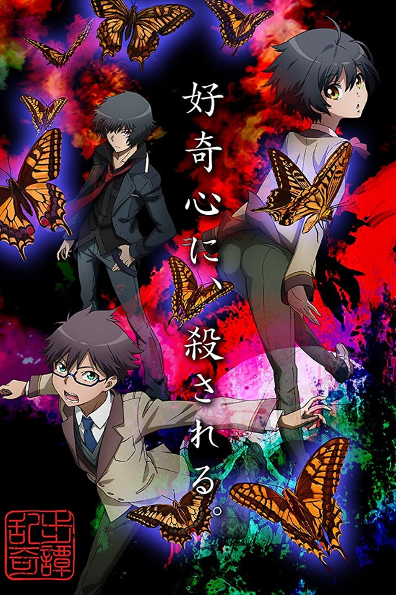
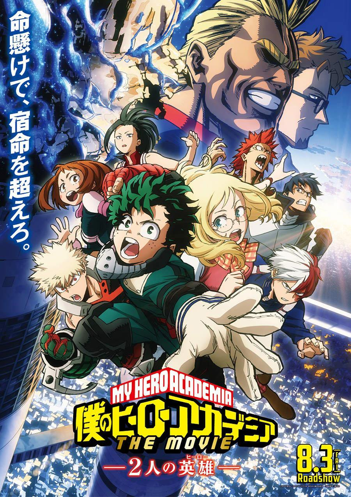
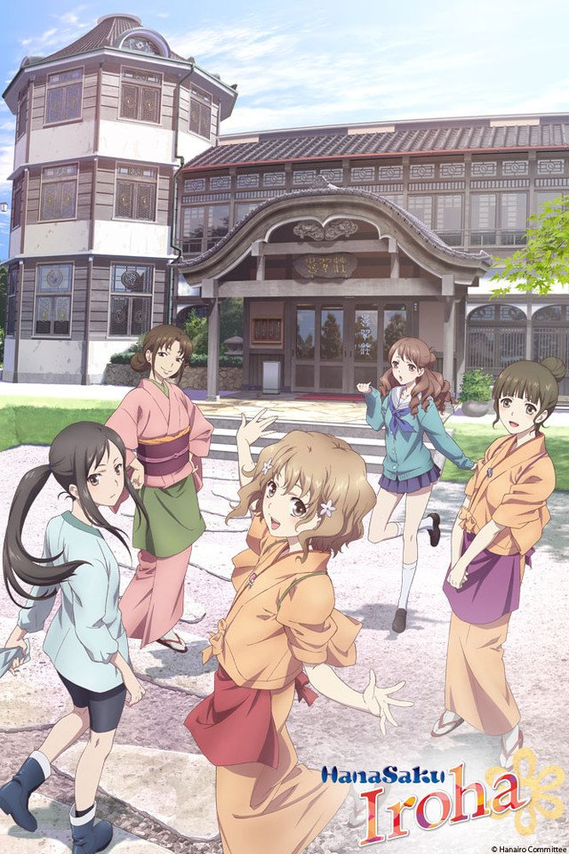

Action
The action genre in anime depicts extremely high levels of intense action. More often than not, you’ll be witnessing thrilling battles and action-packed fight scenes in the shows from this genre. These series will make you jump off your seat or knock your socks off. Overall, the action genre usually possesses lots of battle scenes, fluid animation, and highly-engaging elements that will make your adrenaline rush!


Adventure
The adventure genre is about travelling and undertaking an adventure in a certain place or around the world (which may sometimes escalate to the whole universe or even to the other dimensions). In this genre, the main characters don’t usually stay in one place. They venture into several different places, usually with a goal in mind (e.g. searching for treasure, exploring some new place, defeating a heinous villain, or saving the world). Adventure anime are so broad and flexible that these shows can usually stretch to a huge number of episodes as well as overlap with multiple genres, usually with action.


Comedy
The main purpose of the comedy genre is…you got it…to make you laugh! If it fails to make you laugh or at least make you giggle, then it’s a failure. But then again, humor can depend on your personal sense of humor. The animation may not be as impressive as TV shows in the action and drama category, but that can be forgiven for the laughs. Funny moments, hilarious scenes, wacky dialogue, comical happenings—all of these are covered by the comedy genre in anime!


Drama
Bringing us tears and a wave of emotions is basically what the drama genre does best! Drama anime tends to connect the viewers to the experiences of the characters. This results in viewers feeling what the characters are going through. Whether it's a tickle of emotion or a barrage of feelings, the goal of these series is to touch our hearts. In anime, one of the greatest signs that the drama effectively worked is if it was able to make you cry.
Fantasy
The fantasy genre in anime primarily deals with fantasy worlds and surreal events and locations. Most of the time, the setting is in a magical world where the characters start an adventure. Sometimes they get sent there from the real world. Magic is oftentimes a component of this genre, and various mystical elements serve as the building blocks of the story. You’ll often know it’s a fantasy anime if the environment and atmosphere seems so dazzling and dreamlike that it’ll make you feel captivated and allured.
Horror
It’s not difficult to spot the horror genre in anime. Usually, if there are ghosts, monsters, gore, and creeps, then you’re likely watching a horror series. Heavy gore and bloody violence is a common trait. The most important factor for a show to be considered horror is its ability to scare and creep you out.


Isekai
Isekai translates to "another world." This subgenre typically has a narrative where a protagonist somehow gets transported to a different world. The new world is more often than not in a fantasy setting, occasionally with traits pulled from JRPG games.
This category of anime exploded during the 2010s and arguably dominated the decade. A good portion of isekai anime is adapted not from manga but rather from light novels. The most popular series in this subgenre may be Sword Art Online. While the world featured there was just virtual reality, it did feature a fantasy setting that would be mimicked in other anime.
Notable Animes

- That time I got reincarnated as a Slime

- The Rising of the Shield hero
- No Game No life
- 
- Re:Zero, Starting life in another world
Kids
A lot of people say that anime is just for kids, but that’s not really true. As a matter of fact, there are only a few number of anime that are precisely catered towards children. These shows are contained within the kids subgenre. These shows are mild, light, and insightful, which makes them perfect for children 12 and under.

Magic
Magic, in all its essence, is about magical stuff like spells and incantations. It can also include magical sources, beings that grants wishes, and good ol’ sleeve tricks. One of the most famous themes in the magic genre is magical girls. It is so popular that it might just become a whole new genre on its own in the future.
Mystery
If there’s one thing that’s similar in all mystery anime shows, it is the existence of a central enigma. Whether it’s an event, a place, or an item, there’s some sort of mystery surrounding the narrative. In the history of anime, the most popular shows in the genre have featured detectives and gumshoes.
Notable Animes
- Tokyo Revengers

- Psycho Pass

- Paronia Agent
- 
- Rampo Kitan
Psychological
Psychological anime are shows that delve into how the mind and psyche work. This genre tackles everything on a psychological level (sometimes even philosophical). You’ll often find mind games here as well as battles where the use of the wits is the primary focus. Series in this genre will play with your mind and make you think hard

Romance
Romance is all about love and sweet moments. Shows involved with this genre often have the skill to tug everyone’s heartstrings with their romantic scenes and tender moments. The focus of these shows is the romantic relationships between the characters as well as their blooming love with one another. You’ll often find romance anime tightly tied with the shoujo subgenre, but it also works pretty well with comedy, harem, and drama.
Science - Fiction
Sci-fi (short for science fiction) is a genre that showcases scientific and technological elements in its story. Machines and various kinds of technologies are staples of this genre. Most of the time, its focus is on the advancement and development of science and technology. That is why you’ll often find sci-fi combined with subgenres such as mecha and space.


Seinen
Seinen is actually a demographic but is also considered to be a category in anime. It’s a subgenre that specifically targets male viewers around the age range of 18-40. The shows here are depicted in a more mature light and often include more explicit content such as gore, sex, and violence. More cerebral narratives are present as well.

Shoujo
Shoujo refers to the demographic of young girls. This subgenre specifically targets female viewers around the age range of 10-18. Most of the time, shoujo anime works hand-in-hand with the romance and comedy genre, particularly with the former. The protagonist is traditionally female and the narrative focuses on romance as well as personal growth. The world in these shows are often very idealized.
One of the earliest examples of shoujo anime is Princess Knight from 1967. It has staples of the subgenre such as internal conflicts as well as conflicts with others. The Rose of Versailles is another iconic entry that has influenced anime and future shoujo titles like Revolutionary Girl Utena.


Shounen
Shounen refers to the demographic that this type of anime targets, which is male viewers around the age range of 10-18. These shows are usually a combination of action and adventure and are typically adapted from serial manga series. As such, these anime tend to have lengthy runs. One Piece currently has over 800 episodes and is still running. These shows are typically the most popular with mainstream audiences. They have done very well when exported to foreign markets thanks to their relatively simple plots and focus on action.
Notable Animes
- Naruto
- 
- My Hero Academia

- Bleach

- Fullmetal Alchemist
Slice of Life
When one says slice of life, that means the mundane good ol’ life. Stories depicted in this genre are realistically set in the domain of real life. Nothing out-of-the-blue happens, but that’s the point! Everyday life is portrayed in a realistic light, with nothing out of the extraordinary wrecking the premise.
Notable Animes
- Tamako Market
- Assasination Classroom
- 
- Hanasaku Iroha
- Waiting n the Summer
Sports
Pretty much self-explanatory, sports anime are shows that cover characters engaging in athletic competition. Popular choices in this category includes basketball, tennis, baseball, and soccer. Other sports exists as well (including those that you wouldn’t expect showing up in anime). As time goes on, more and more of these series are produced. Just like real sports, shows in this subgenre are action-packed!

Supernaturnal
When one says supernatural, they’re referring to stuff or events that are odd and out-of-the-blue. For this category, supernatural might refer to something mythical, mystical, bizarre, or something outside the bounds of accepted reality. There’s a shadow of mystery often found in shows involved with this genre.

Thriller
Thriller is a genre of literature. Thrillers are dark, engrossing, and suspenseful plot-driven stories. They very seldom include comedic elements. Any novel can generate excitement, suspense, interest, and exhilaration, but because these are the primary goals of the thriller genre, thriller writers have laser-focused expertise in keeping a reader interested.